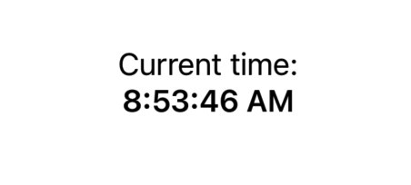
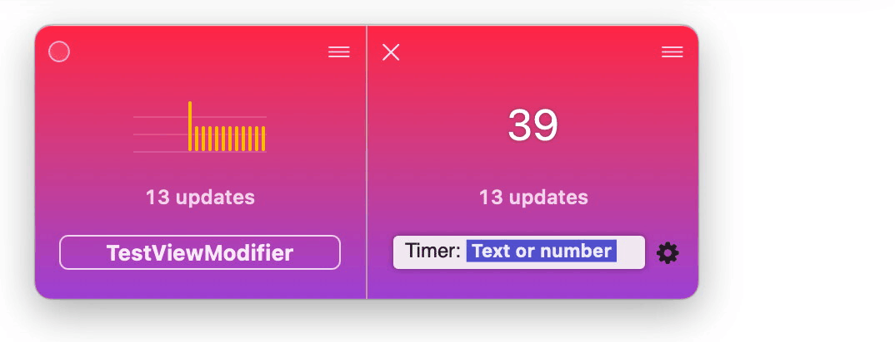
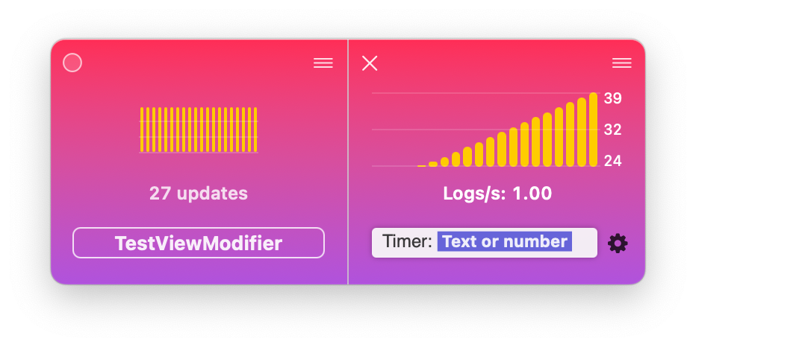

Logging values and seeing them visualized in dataTile is pretty powerful but the core concept of the app really shines when a developer would automate logs that drives metrics over time.
Such metrics could be any value that changes over time — the size of the app cache, consumed RAM, or how many instances of a given class are created.
In this article we’ll look into logging how many times a SwiftUI view is re-created. This comes handy when you’re trying to track unexpected changes that trigger recreating your SwiftUI views.
SwiftUI view modifier counter
We will create a view modifier that counts how many times it’s been called. We’ll offload the logging to a custom dispatch queue called debugRenderQueue:
private let debugRenderQueue = DispatchQueue(label: "debugRenderQueue")
private var debugRenderCounts = [String: Int]()
debugRenderCounts will hold count for each of the unique call sites where the custom view modifier is used in code.
extension View {
func debugRender(
named: String? = nil,
file: StaticString = #file,
line: UInt = #line) -> some View {
// implementation below
}
}
The developer can give the counter a name via the named parameter or pass no parameters at all and the counter will use the file name and line to uniquely identify the modifier call site.
Finally, we will asynchronously increment the current counter and log the value; then return the view unchanged:
debugRenderQueue.async {
let id = named ?? "\(file):\(line)"
debugRenderCounts[id, default: 0] += 1
os_log("\(id): \(debugRenderCounts[id]!)")
}
return self
Now let’s give this new modifier a try.
Inspecting view render count with debugRender()
Let’s take a simple SwiftUI view that renders a clock driven by a Timer:
struct ContentView: View {
@State var timer = Timer.publish(every: 0.1, on: .main, in: .default)
.autoconnect()
@State var time = ""
var body: some View {
VStack {
Text("Current time:")
Text(time).bold()
}
.onReceive(timer) { d in
time = d.formatted(date: .omitted, time: .standard)
}
}
}
The timer updates the time state property with the current time 10 times per second, the view then picks up the new state and renders the time on screen:

When it comes to improving the performance of your app — you might want to verify if the view is redrawn 10 per second (as often as you update the time property) or just once when the time property actually changes value.
This is where using the new modifier from above comes handy. If you add the debugRender() modifier you’ll see the updates in dataTile right away:
Text(time).bold()
.debugRender(named: "Timer")

And to make the data even easier to read — click the tile menu and select “View as chart” and then click on the tile subtitle to see how many logs per second it displays:

And now you have your answer — the tile updates once per second, therefore SwiftUI only recreates the view when the state actually changes.
What other SwiftUI view modifiers that talk to dataTile would you like to use? Get in touch on https://twitter.com/icanzilb or https://mastodon.social/@icanzilb.
Download dataTile for Simulator today.